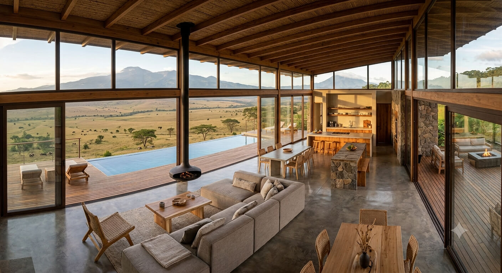
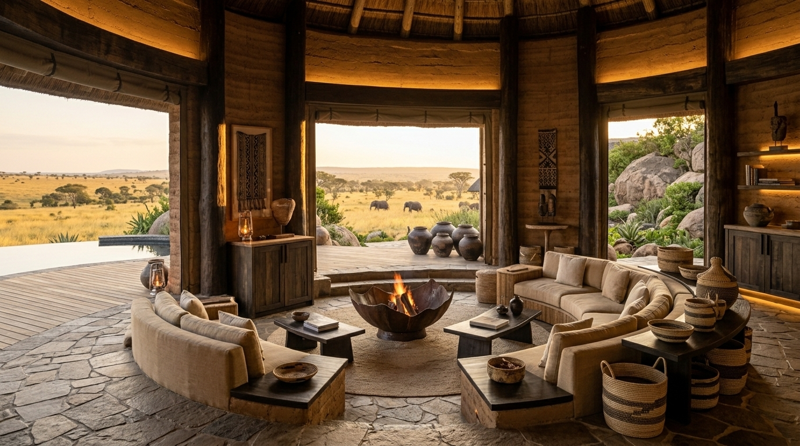

Espacios donde la arquitectura, la naturaleza y la hospitalidad se encuentran en perfecta armonía.

Una villa íntima abierta hacia las interminables llanuras, diseñada para disfrutar del silencio, la naturaleza y la privacidad absoluta.
Situada en un entorno privilegiado, esta suite combina elegancia y aventura con vistas abiertas que transforman cada amanecer en un espectáculo.
Una elegante suite conectada con la sabana, perfecta para despertar frente al horizonte y disfrutar de la calma del entorno más auténtico.
Un refugio amplio y sereno rodeado de naturaleza salvaje, donde cada espacio invita a contemplar el paisaje africano con total comodidad.
Un santuario de lujo y privacidad donde la arquitectura, el paisaje y la esencia de África se encuentran.
Espacios generosos, privacidad y naturaleza se unen en una villa pensada para compartir momentos inolvidables en familia o con amigos.
Refugios extraordinarios creados para quienes buscan privacidad, calma y una conexión auténtica con la naturaleza.
Una villa excepcional abierta a la sabana, diseñada para compartir África con total privacidad, amplitud y unas vistas que parecen no tener fin.
Un refugio íntimo donde la naturaleza marca el ritmo, con espacios abiertos, piscina infinity y horizontes que se funden con la sabana.


Una suite suspendida entre árboles centenarios, creada para desconectar, contemplar el paisaje y vivir África desde la más absoluta intimidad.
Cada refugio abre la puerta a una forma distinta de descubrir la sabana.
